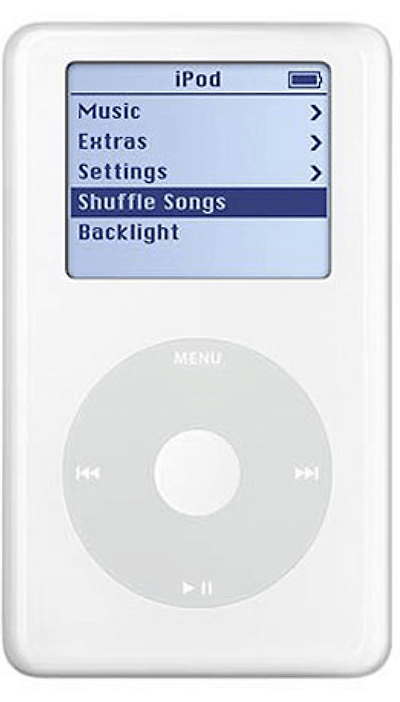
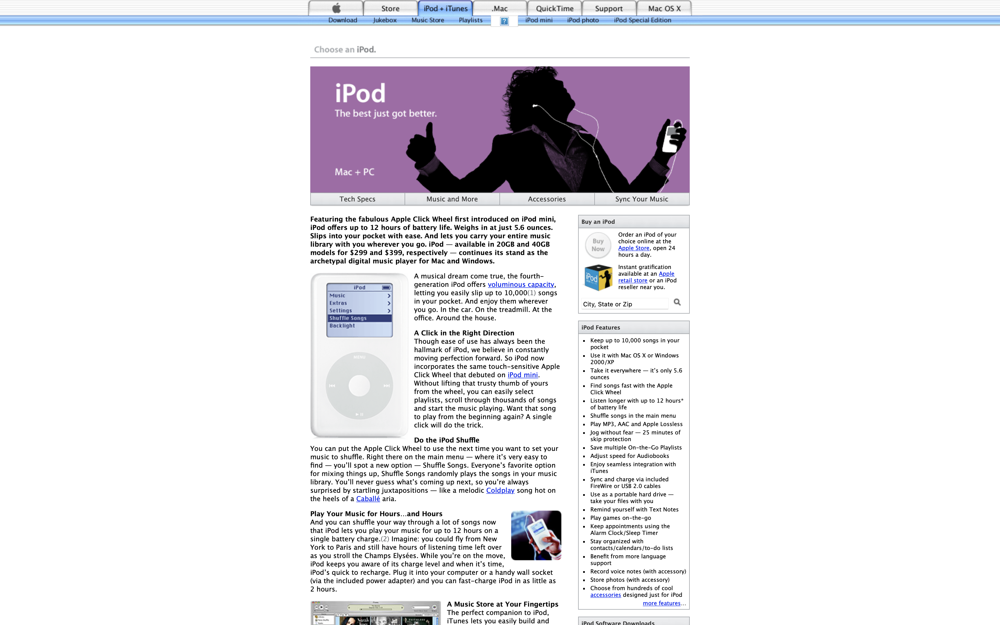

Featuring the fabulous Apple Click Wheel first introduced on iPod mini, iPod offers up to 12 hours of battery life. Weighs in at just 5.6 ounces. Slips into your pocket with ease. And lets you carry your entire music library with you wherever you go. iPod — available in 20GB and 40GB models for $299 and $399, respectively — continues its stand as the archetypal digital music player for Mac and Windows.
iPod (Click Wheel) models have a Click Wheel like the iPod mini, but are larger and the hold switch is on the top-right side. iPod (Click Wheel) models have a monochrome display. iPod (Click Wheel) is referred to as the fourth-generation iPod.


iPod Photo
October 2004
Why should your ears have all the fun?
A delight for the ears. A feast for the eyes. Though it’s no bigger than a pack of playing cards and weighs in at just over 6 ounces, iPod photo delivers a one-two sensory punch. Letting you carry an entire library of your favorite music — up to 15,000 songs — or enough photos — as many as 25,000 — to fill nearly 200 slide trays or cover nearly 5,000 square feet of wall space. Got a really big den?
iPod and iPod photo are now one and the same, with every white iPod boasting a full-color display. They continue to have the same controls as iPod (Click Wheel) but now all models have a color display like iPod photo—ideal for viewing album artwork and playing slideshows. These are considered fourth-generation models along with iPod (Click Wheel).